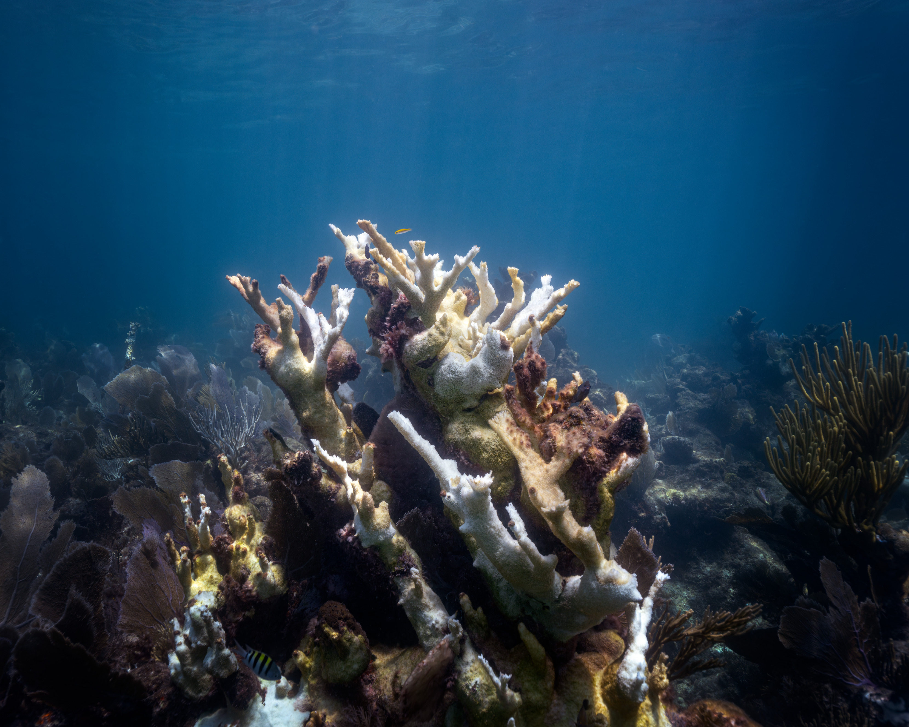

What to Know About St. George, Utah
St. George has a rich cultural scene in October, with opportunities to enjoy local art and music. The area features galleries, outdoor concerts, and community gatherings. Visitors can explore the natural beauty of the region while engaging with the local culture through various informal events.
Local tip: Check out the local farmers market on Saturday mornings for fresh produce and artisan goods. It's a great way to experience the community vibe. More info

Claire Press

Jake Nackos

Joshua Hoehne
🧥 What to Expect
Typical October temperatures are around 77°F daytime and 55°F overnight. The desert landscape of St. George displays warm autumn hues with cottonwoods turning golden. Crowds are lighter than summer, making it easier to explore. Most attractions are open with no significant seasonal closures.
Current Weather🚗 Getting Here
Open in Google Maps →Take I-15 S to I-15 S toward St. George. The drive features picturesque desert landscapes and distant mountains. Parking is available at most attractions in St. George.
🏔️ Top Attractions
⏰ Possible Daily Schedule
🎭 Cultural Events
St. George has a rich cultural scene in October, with opportunities to enjoy local art and music. The area features galleries, outdoor concerts, and community gatherings. Visitors can explore the natural beauty of the region while engaging with the local culture through various informal events.
Local tip: Check out the local farmers market on Saturday mornings for fresh produce and artisan goods. It's a great way to experience the community vibe. More info
🍽️ Dinner Recommendations
What to Know About Zion National Park
Zion National Park has a remote setting with limited cultural events in October. Visitors can engage with the park's natural beauty through ranger-led programs, evening talks at the amphitheater, and exhibits at the visitor center. The nearest gateway town, Springdale, offers a few local dining options and occasional live music at restaurants, but specific events may not be scheduled during this time.
Local tip: Check out the evening programs at the Zion National Park amphitheater. These programs typically feature ranger talks and are a great way to learn about the park's ecology and history. More info

NPS / Ally O'Rullian
🧥 What to Expect
Typical October temperatures are around 62°F daytime and 38°F overnight. Autumn colors enhance the red rock landscape, with cottonwoods and maples displaying rich yellows and oranges. Crowds will be lower than during summer peak season. The park shuttle is necessary for access to Zion Canyon, with service beginning early in the morning and ending around sunset.
Current Weather🚗 Getting Here
Open in Google Maps →Take I-15 N to US-9 E for a scenic drive through the Virgin River Gorge. The route offers views of striking red cliffs and desert landscapes. Arrive at the park entrance where parking can fill quickly, especially on weekends.
🏔️ Top Attractions
⏰ Possible Daily Schedule
🎭 Cultural Events
Zion National Park has a remote setting with limited cultural events in October. Visitors can engage with the park's natural beauty through ranger-led programs, evening talks at the amphitheater, and exhibits at the visitor center. The nearest gateway town, Springdale, offers a few local dining options and occasional live music at restaurants, but specific events may not be scheduled during this time.
Local tip: Check out the evening programs at the Zion National Park amphitheater. These programs typically feature ranger talks and are a great way to learn about the park's ecology and history. More info
🍽️ Dinner Recommendations
Bryce Canyon National Park
October 19–21, 2026
<a rel="nofollow" class="external text" href="https://www.flickr.com/people/51986662@N05">USFWS Mountain-Prairie</a>
What to Know About Bryce Canyon National Park
Bryce Canyon National Park is a remote setting with a focus on natural beauty and outdoor activities. In October, visitors can engage in the park's interpretive programs, including ranger-led talks and evening programs at the amphitheater. The nearest gateway town, Bryce Canyon City, offers limited cultural events but may have local activities such as seasonal festivals or music events.
Local tip: Check for ranger-led programs at the visitor center, which typically occur daily and provide insights into the park's ecology and geology. More info

<table style="margin: 1.5em auto; width:700px; background-color:#f6f6f6; border:2px solid #cccccc; padding:1px;" cellspacing="10" dir="ltr" class="layouttemplate"> <tbody><tr> <td><b>When reusing, please credit me as</b> </td></tr> <tr> <td>author: <i>Adam Kliczek, <a rel="nofollow" class="external free" href="http://memoriesstay.com">http://memoriesstay.com</a></i> (<i>CC-BY-SA-3.0</i>) </td></tr> <tr> <td>If you use my image on your website, please send me an email with webpage adress. </td></tr> <tr> <td>Contact me at: <i>adam.kliczek<span typeof="mw:File"><a href="//commons.wikimedia.org/wiki/@" title="@"><img alt="@" src="https://upload.wikimedia.org/wikipedia/commons/thumb/b/b5/Nospam_at.svg/20px-Nospam_at.svg.png" decoding="async" width="15" height="15" class="mw-file-element" srcset="https://upload.wikimedia.org/wikipedia/commons/thumb/b/b5/Nospam_at.svg/40px-Nospam_at.svg.png 2x" data-file-width="16" data-file-height="16"></a></span>gmail.com</i> </td></tr> <tr> <td> <hr> <table width="100%"> <tbody><tr><td> <p><span typeof="mw:File"><a href="//commons.wikimedia.org/wiki/File:Info_icon_002.svg" class="mw-file-description" title="More information about pictures"><img alt="More information about pictures" src="https://upload.wikimedia.org/wikipedia/commons/thumb/3/33/Info_icon_002.svg/20px-Info_icon_002.svg.png" decoding="async" width="20" height="20" class="mw-file-element" srcset="https://upload.wikimedia.org/wikipedia/commons/thumb/3/33/Info_icon_002.svg/40px-Info_icon_002.svg.png 2x" data-file-width="480" data-file-height="480"></a></span> <a class="external text" data-mw-original-href="//commons.wikimedia.org/wiki/User:CLI/N%C3%A1pov%C4%9Bda" href="https://commons.wikimedia.org/wiki/User:CLI/N%C3%A1pov%C4%9Bda">pl</a> <a class="external text" data-mw-original-href="//commons.wikimedia.org/wiki/User:CLI/Help" href="https://commons.wikimedia.org/wiki/User:CLI/Help">en</a> <small class="plainlinks"><a class="external text" data-mw-original-href="//commons.wikimedia.org/w/index.php?title=User:CLI/Author/lang&action=edit" href="https://commons.wikimedia.org/w/index.php?title=User:CLI/Author/lang&action=edit">+/−</a></small> </p> </td><td> <p><span typeof="mw:File"><a href="//commons.wikimedia.org/wiki/File:Nuvola_german-spanish-flag.png" class="mw-file-description" title="Translations of this template"><img alt="Translations of this template" src="https://upload.wikimedia.org/wikipedia/commons/thumb/1/14/Nuvola_german-spanish-flag.png/20px-Nuvola_german-spanish-flag.png" decoding="async" width="20" height="20" class="mw-file-element" srcset="https://upload.wikimedia.org/wikipedia/commons/thumb/1/14/Nuvola_german-spanish-flag.png/40px-Nuvola_german-spanish-flag.png 2x" data-file-width="128" data-file-height="128"></a></span> <a class="external text" data-mw-original-href="//commons.wikimedia.org/wiki/User:CLI/Author/pl" href="https://commons.wikimedia.org/wiki/User:CLI/Author/pl">pl</a> <a class="external text" data-mw-original-href="//commons.wikimedia.org/wiki/User:CLI/Author/en" href="https://commons.wikimedia.org/wiki/User:CLI/Author/en">en</a> <small class="plainlinks"><a class="external text" data-mw-original-href="//commons.wikimedia.org/w/index.php?title=User:CLI/Author/lang&action=edit" href="https://commons.wikimedia.org/w/index.php?title=User:CLI/Author/lang&action=edit">+/−</a></small> </p> </td></tr></tbody></table> </td></tr></tbody></table>

<a rel="nofollow" class="external text" href="https://www.flickr.com/people/52890443@N02">CGP Grey</a> from London, United Kingdom
🧥 What to Expect
Typical October temperatures are around 60°F daytime and 40°F overnight. October brings vivid hues to Bryce Canyon as the aspen leaves turn gold against the red rock formations. Crowds are lighter than in summer, making for a more serene experience on the trails. The park does not require shuttle reservations in October, but parking may fill up early at popular trailheads.
Current Weather🚗 Getting Here
Open in Google Maps →Travel northeast on US-89 from Zion National Park, enjoying views of striking landscapes. The final approach to Bryce Canyon features scenic overlooks that showcase the unique hoodoo formations. Be aware that parking at the park entrance can be limited during peak hours.
🏔️ Top Attractions
⏰ Possible Daily Schedule
🎭 Cultural Events
Bryce Canyon National Park is a remote setting with a focus on natural beauty and outdoor activities. In October, visitors can engage in the park's interpretive programs, including ranger-led talks and evening programs at the amphitheater. The nearest gateway town, Bryce Canyon City, offers limited cultural events but may have local activities such as seasonal festivals or music events.
Local tip: Check for ranger-led programs at the visitor center, which typically occur daily and provide insights into the park's ecology and geology. More info
🍽️ Dinner Recommendations
What to Know About Capitol Reef National Park
Capitol Reef National Park is a remote destination with a focus on natural beauty and outdoor activities. While specific ticketed events may not be available during your visit, the park offers ranger-led programs, evening talks, and interpretive exhibits at the visitor center. The nearby town of Torrey provides a small selection of local activities and community gatherings.
Local tip: Check for ranger-led programs at the Capitol Reef Visitor Center, which typically occur daily and provide insights into the park's natural and cultural history. More info

NPS / Pete Wintersteen
🧥 What to Expect
Typical October temperatures are around 61°F daytime and 41°F overnight. October brings colorful fall foliage to Capitol Reef, with bright reds and oranges contrasting the sandstone cliffs. Crowds are lighter than summer, making for a more peaceful experience. Most trails are in good condition, but be aware that some higher elevations may have lingering snow.
Current Weather🚗 Getting Here
Open in Google Maps →Take US-89 S to UT-12 E, then continue on UT-24. The drive features scenic vistas of red rock formations and canyons. Parking is available at the visitor center upon arrival.
🏔️ Top Attractions
⏰ Possible Daily Schedule
🎭 Cultural Events
Capitol Reef National Park is a remote destination with a focus on natural beauty and outdoor activities. While specific ticketed events may not be available during your visit, the park offers ranger-led programs, evening talks, and interpretive exhibits at the visitor center. The nearby town of Torrey provides a small selection of local activities and community gatherings.
Local tip: Check for ranger-led programs at the Capitol Reef Visitor Center, which typically occur daily and provide insights into the park's natural and cultural history. More info
🍽️ Dinner Recommendations
What to Know About Moab
Moab's cultural scene in October features a mix of outdoor activities and community gatherings. While there are no specific ticketed events during your visit, the town is known for its vibrant arts scene and outdoor adventures. Expect opportunities for stargazing and enjoying the natural beauty of the surrounding red rock landscapes.
Local tip: Check out the Moab Farmers Market on October 22, a great spot for local produce and crafts, held at the Swanny City Park. More info

Andrey Grinkevich

Bob Walker
🧥 What to Expect
Typical October temperatures are around 70°F daytime and 46°F overnight. October reveals bright orange and gold foliage against the red rock landscape. Crowds decrease significantly compared to summer, making for a more tranquil experience. No timed-entry requirements for Arches National Park, but arrive early for the best parking options.
Current Weather🚗 Getting Here
Open in Google Maps →Take UT-24 W through scenic red rock landscapes before merging onto US-191 S. The drive features stunning vistas, particularly as you approach Moab. Parking is available at various trailheads and viewpoints.
🏔️ Top Attractions
⏰ Possible Daily Schedule
🎭 Cultural Events
Moab's cultural scene in October features a mix of outdoor activities and community gatherings. While there are no specific ticketed events during your visit, the town is known for its vibrant arts scene and outdoor adventures. Expect opportunities for stargazing and enjoying the natural beauty of the surrounding red rock landscapes.
Local tip: Check out the Moab Farmers Market on October 22, a great spot for local produce and crafts, held at the Swanny City Park. More info
🍽️ Dinner Recommendations

Jack Millard
🧥 What to Expect
Typical October temperatures are around 53°F daytime and 30°F overnight. Aspen and cottonwood trees display vibrant fall colors, creating a striking contrast against the mountain backdrop. October sees fewer visitors than summer, allowing for a more intimate experience. The free gondola operates between Telluride and Mountain Village, providing easy access to stunning views.
Current Weather🚗 Getting Here
Open in Google Maps →Travel on US-191 S and then CO-145 S through scenic mountain landscapes. The route features winding roads and stunning views of the San Juan Mountains. Parking is available in Telluride, but arrive early as spots can fill up quickly.
🏔️ Top Attractions
⏰ Possible Daily Schedule
🎭 Cultural Events & Entertainment
Telluride has a rich cultural scene in October, with local harvest festivals and outdoor adventures complementing the film festival. Visitors can explore art galleries and enjoy live music at various venues throughout the town.
🍽️ Dinner Recommendations
Pagosa Springs
October 26–27, 2026
Jeremiah Barnett
What to Know About Pagosa Springs
Pagosa Springs in October has a relaxed cultural scene focused on the changing seasons. Visitors can enjoy the fall foliage and local outdoor activities, with opportunities for hiking and soaking in hot springs. The town often features community gatherings and seasonal celebrations, though specific ticketed events may be limited during this time.
Local tip: Check out the Pagosa Springs Center for the Arts for ongoing cultural events and live music performances. They typically host a variety of shows and community gatherings throughout the fall. More info

crystal coate

Catherine
🧥 What to Expect
Typical October temperatures are around 61°F daytime and 33°F overnight. Autumn colors peak in late October, with golden aspens contrasting against the rugged mountains. Crowd levels are lower than summer, providing a more peaceful experience. The hot springs at The Springs Resort & Spa are especially inviting for relaxation after a day of exploring.
Current Weather🚗 Getting Here
Open in Google Maps →Take US-550 S from Telluride to Pagosa Springs. The drive features scenic mountain views and winding roads, especially as you pass through the San Juan National Forest. Arrive at The Springs Resort & Spa for easy access to your accommodations and activities.
🏔️ Top Attractions
⏰ Possible Daily Schedule
🎭 Cultural Events
Pagosa Springs in October has a relaxed cultural scene focused on the changing seasons. Visitors can enjoy the fall foliage and local outdoor activities, with opportunities for hiking and soaking in hot springs. The town often features community gatherings and seasonal celebrations, though specific ticketed events may be limited during this time.
Local tip: Check out the Pagosa Springs Center for the Arts for ongoing cultural events and live music performances. They typically host a variety of shows and community gatherings throughout the fall. More info
🍽️ Dinner Recommendations

Gabriel Tovar

Maddy Baker

Jenny Sherman
🧥 What to Expect
Typical October temperatures are around 63°F daytime and 43°F overnight. Aspen and cottonwood trees display vivid autumn colors, with golden leaves contrasting against adobe architecture. Crowds are lower than summer, making it a more relaxed experience. Many outdoor attractions and galleries remain open, but check for seasonal hours.
Current Weather🚗 Getting Here
Open in Google Maps →Drive south on US-84, enjoying scenic mountain views and the changing colors of fall. The route features rolling hills and wide-open landscapes. Parking is available at the museum and plaza areas upon arrival in Santa Fe.
🏔️ Top Attractions
⏰ Possible Daily Schedule
🎭 Cultural Events & Entertainment
Santa Fe's cultural scene in October features ongoing art walks, gallery exhibitions, and live music events. The city is known for its rich artistic heritage and vibrant community gatherings.
October 2026
📍 Santa Fe Farmers Market
💵 Free
🍽️ Dinner Recommendations
🎒 Packing Summary (Trip-Wide)
Here's what to bring and where it's needed:
- camera (Bryce Canyon National Park, Capitol Reef National Park, Telluride)
- comfortable walking shoes (Santa Fe)
- hiking boots (Bryce Canyon National Park, Capitol Reef National Park, Moab, Pagosa Springs, Telluride, Zion National Park)
- hiking shoes (St. George, Utah)
- layered clothing (Telluride)
- layers for changing temperatures (Bryce Canyon National Park)
- layers for cool evenings (Moab)
- layers for warmth (Capitol Reef National Park, Zion National Park)
- light jacket (Pagosa Springs, Santa Fe, St. George, Utah)
- snacks (Zion National Park)
- sun protection (Moab)
- sunglasses (Santa Fe, St. George, Utah)
- swimwear (Pagosa Springs)
- water bottle (Bryce Canyon National Park, Capitol Reef National Park, Moab, Pagosa Springs, Santa Fe, St. George, Utah, Telluride)
- water shoes (Zion National Park)